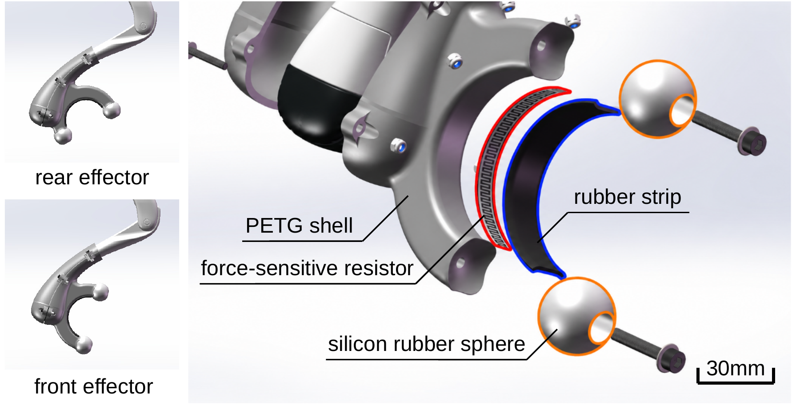
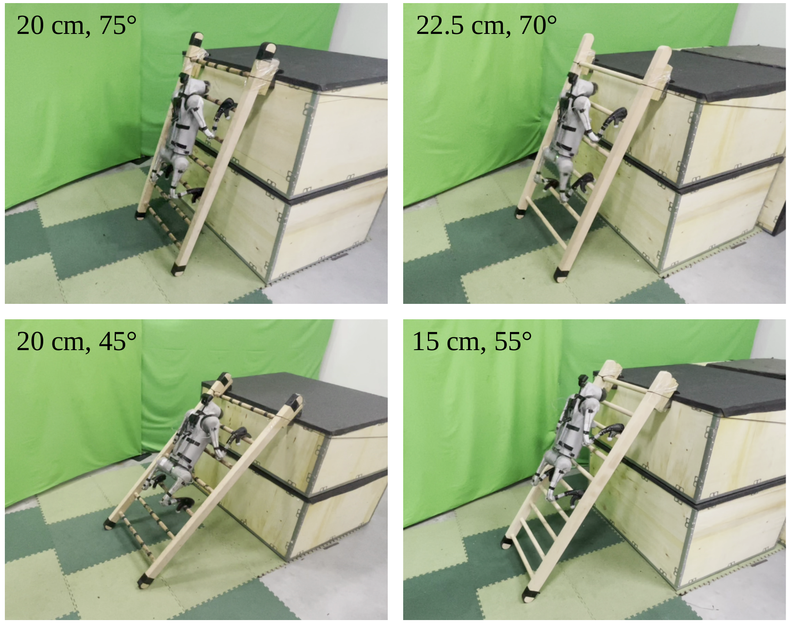

Reinforcement Learning of Quadrupedal Ladder Climbing
My interest in robot learning was sparked by a visit to Unitree's headquarters in Hangzhou in the summer of 2025. In December, I joined the Institute of Design and Control Engineering for Heavy Equipment and began my research on quadrupedal locomotion under the supervision of Prof. Chenkun Qi.
In this project, I proposed an RL-based locomotion policy fusing forward depth, contact sensing and proprioception through explicit state reconstruction, which enabled a Unitree Go2 quadruped to climb ladders of different inclinations and rung spacings with an overall 82.9% success rate. For local contact feedback under visual occlusion, I developed a hook-shaped contact-sensing end effector with a force-sensitive resistor, and used the ADC of an STM32 microcontroller to sample the voltage divider output during deployment. I also designed contact-aware reward functions and an adaptive terrain curriculum to promote stable ladder-climbing behavior.

